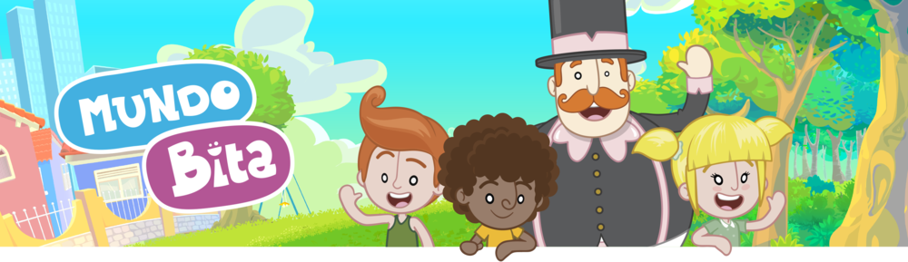

O Mundo Bita é um projeto de entretenimento infantil criado pelo músico e designer Chaps Melo em 2010. Desde então, já lançou dezenas de singles musicais que arrecadaram diversas certificações de Ouro, Platina, Diamante e Diamante Duplo com milhões de singles vendidos.
